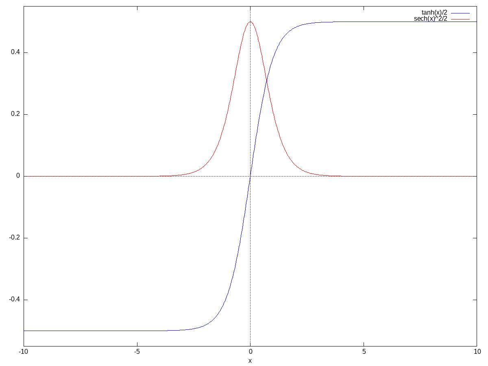
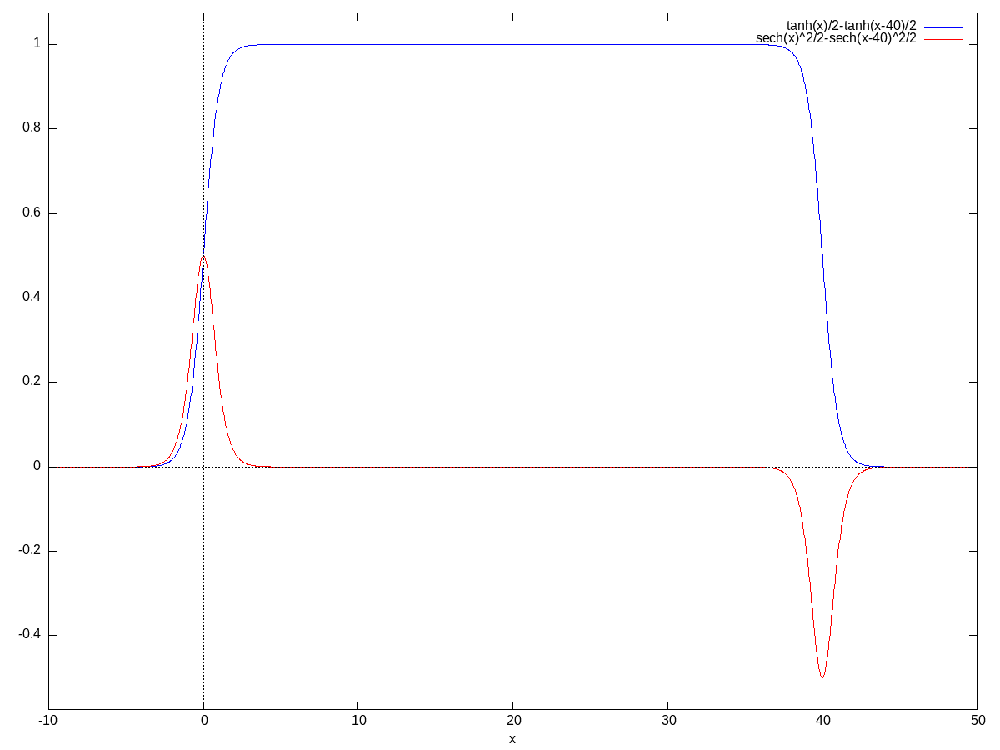
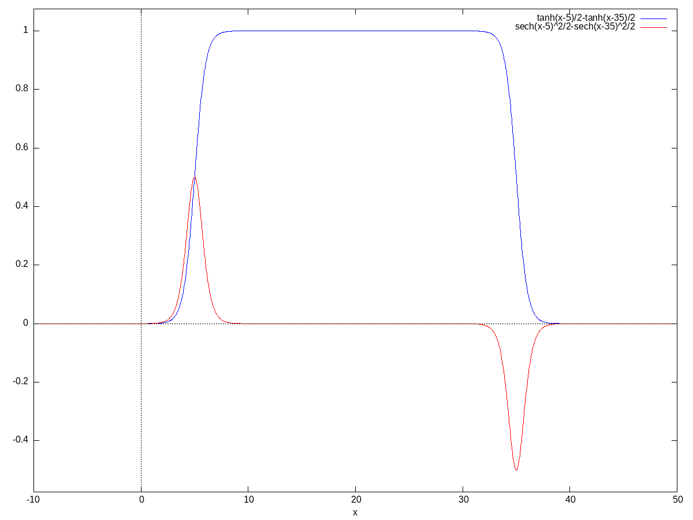

\( \DeclareMathOperator{\abs}{abs} \newcommand{\ensuremath}[1]{\mbox{$#1$}} \)
| (%i2) |
/*
For a constant acceleration ramp the steps and speed at time t can be calculated by: */ s ( t , a ) : = 1 / 2 · a · t ^ 2 ; v ( t , a ) : = a · t ; |
\[\operatorname{ }\operatorname{s}\left( t\operatorname{,}a\right) \operatorname{:=}\frac{1}{2} a {{t}^{2}}\]
\[\operatorname{ }\operatorname{v}\left( t\operatorname{,}a\right) \operatorname{:=}a t\]
| (%i3) |
/*
The time at a given step is then */ t ( s , a ) : = sqrt ( 2 · s / a ) ; |
\[\operatorname{ }\operatorname{t}\left( s\operatorname{,}a\right) \operatorname{:=}\sqrt{\frac{2 s}{a}}\]
| (%i4) |
/*
and the speed at a given step is then */ v ( s , a ) : = sqrt ( 2 · s · a ) ; |
\[\operatorname{ }\operatorname{v}\left( s\operatorname{,}a\right) \operatorname{:=}\sqrt{2 s a}\]
| (%i5) |
/*
and finally the step rate R (time distance between two pulses): */ R ( s , a ) : = 1 / sqrt ( 2 · s · a ) ; |
\[\operatorname{ }\operatorname{R}\left( s\operatorname{,}a\right) \operatorname{:=}\frac{1}{\sqrt{2 s a}}\]
| (%i6) |
/*
With s_ramp being the number of steps to accelerate or decelerate and s_total being the number of the steps for the total ramp including acceleration and deceleration, the complete ramp with acceleration, coasting and deceleration can be written as */ v ( s , a , s_ramp , s_total ) : = if s < s_ramp then sqrt ( 2 · s · a ) else if s < s_total − s_ramp then sqrt ( 2 · s_ramp · a ) else if s < s_total then sqrt ( 2 · ( s_total − s ) · a ) else 0 $ |
| (%i7) |
/*
And the acceleration over steps is simply */ a ( s , a , s_ramp , s_total ) : = if s < s_ramp then a else if s < s_total − s_ramp then 0 else if s < s_total then − a else 0 $ |
| (%i8) |
/*
As an example the acceleration over steps for acceleration = 5 m/s², ramp steps = 100 and total ramp steps = 1000: */ wxplot2d ( [ a ( s , 5 , 100 , 1000 ) ] , [ s , 0 , 1000 ] ) ; |
\[\operatorname{ }\]

\[\operatorname{ }\]
| (%i9) | wxplot2d ( [ v ( s , 5 , 100 , 1000 ) ] , [ s , 0 , 1000 ] ) ; |
\[\operatorname{ }\]

\[\operatorname{ }\]
| (%i10) |
/*
In order to generalize the ramp function, we introduce a dimensionless function f, which translates from range [0,1] into the range [0,1]. */ v ( s ) : = v_max · f ( s / s_ramp ) ; |
\[\operatorname{ }\operatorname{v}(s)\operatorname{:=}{v_{\ensuremath{\mathrm{max}}}} \operatorname{f}\left( \frac{s}{{s_{\ensuremath{\mathrm{ramp}}}}}\right) \]
| (%i11) |
/*
Using this definition, the acceleration a(s) can be approximated at steps s using Δt and Δs: */ a ( s ) : = ( v ( s + Δs ) − v ( s − Δs ) ) / ( 2 · Δt ) ; |
\[\operatorname{ }\operatorname{a}(s)\operatorname{:=}\frac{\operatorname{v}\left( s+\ensuremath{\mathrm{\Delta s}}\right) -\operatorname{v}\left( s-\ensuremath{\mathrm{\Delta s}}\right) }{2 \ensuremath{\mathrm{\Delta t}}}\]
| (%i14) |
/*
derived in a couple of steps. Hereby f_1(x) shall be the derivative of f(x) */ a ( s ) : = ( v_max · f ( ( s + Δs ) / s_max ) − v_max · f ( ( s − Δs ) / s_max ) ) / ( 2 · Δt ) ; a ( s ) : = v_max · ( f ( ( s + Δs ) / s_max ) − f ( ( s − Δs ) / s_max ) ) / ( 2 · Δt ) ; a ( s ) : = v_max · ( 2 · f ( s / s_max ) · df ( s / s_max ) / ds · s_max · Δs ) / ( 2 · Δt ) ; |
\[\operatorname{ }\operatorname{a}(s)\operatorname{:=}\frac{{v_{\ensuremath{\mathrm{max}}}} \operatorname{f}\left( \frac{s+\ensuremath{\mathrm{\Delta s}}}{{s_{\ensuremath{\mathrm{max}}}}}\right) -{v_{\ensuremath{\mathrm{max}}}} \operatorname{f}\left( \frac{s-\ensuremath{\mathrm{\Delta s}}}{{s_{\ensuremath{\mathrm{max}}}}}\right) }{2 \ensuremath{\mathrm{\Delta t}}}\]
\[\operatorname{ }\operatorname{a}(s)\operatorname{:=}\frac{{v_{\ensuremath{\mathrm{max}}}} \left( \operatorname{f}\left( \frac{s+\ensuremath{\mathrm{\Delta s}}}{{s_{\ensuremath{\mathrm{max}}}}}\right) -\operatorname{f}\left( \frac{s-\ensuremath{\mathrm{\Delta s}}}{{s_{\ensuremath{\mathrm{max}}}}}\right) \right) }{2 \ensuremath{\mathrm{\Delta t}}}\]
\[\operatorname{ }\operatorname{a}(s)\operatorname{:=}\frac{{v_{\ensuremath{\mathrm{max}}}} \left( \frac{2 \operatorname{f}\left( \frac{s}{{s_{\ensuremath{\mathrm{max}}}}}\right) \operatorname{df}\left( \frac{s}{{s_{\ensuremath{\mathrm{max}}}}}\right) }{\ensuremath{\mathrm{ds}}} {s_{\ensuremath{\mathrm{max}}}} \ensuremath{\mathrm{\Delta s}}\right) }{2 \ensuremath{\mathrm{\Delta t}}}\]
| (%i15) |
/**
Δs can be calulated out of Δt using the speed: */ Δs = v · Δt ; |
\[\operatorname{ }\ensuremath{\mathrm{\Delta s}}=v\, \ensuremath{\mathrm{\Delta t}}\]
| (%i17) |
/*
derived in a couple of steps. Hereby f_1(x) shall be the derivative of f(x) */ a ( s ) : = v_max · ( f ( s / s_max ) · df ( s / s_max ) / ds · s_max · v ( s ) · Δt ) / Δt ; a ( s ) : = v_max · f ( s / s_max ) · f_1 ( s / s_max ) · v_max · f ( s / s_max ) / s_max ; |
\[\operatorname{ }\operatorname{a}(s)\operatorname{:=}\frac{{v_{\ensuremath{\mathrm{max}}}} \left( \frac{\operatorname{f}\left( \frac{s}{{s_{\ensuremath{\mathrm{max}}}}}\right) \operatorname{df}\left( \frac{s}{{s_{\ensuremath{\mathrm{max}}}}}\right) }{\ensuremath{\mathrm{ds}}} {s_{\ensuremath{\mathrm{max}}}} \operatorname{v}(s) \ensuremath{\mathrm{\Delta t}}\right) }{\ensuremath{\mathrm{\Delta t}}}\]
\[\operatorname{ }\operatorname{a}(s)\operatorname{:=}\frac{{v_{\ensuremath{\mathrm{max}}}} \operatorname{f}\left( \frac{s}{{s_{\ensuremath{\mathrm{max}}}}}\right) {f_1}\left( \frac{s}{{s_{\ensuremath{\mathrm{max}}}}}\right) {v_{\ensuremath{\mathrm{max}}}} \operatorname{f}\left( \frac{s}{{s_{\ensuremath{\mathrm{max}}}}}\right) }{{s_{\ensuremath{\mathrm{max}}}}}\]
| (%i19) |
/*
Now we need a mathematical function, which can be used to define a smooth acceleration ramp without jumps. Here we have chosen tanh() with its first derivative: */ g ( x ) : = tanh ( x ) / 2 ; diff ( g ( x ) , x ) ; |
\[\operatorname{ }\operatorname{g}(x)\operatorname{:=}\frac{\operatorname{tanh}(x)}{2}\]
\[\operatorname{ }\frac{{{\operatorname{sech}(x)}^{2}}}{2}\]
| (%i20) |
/*
So the first derivative is simply */ g_1 ( x ) : = sech ( x ) ^ 2 / 2 ; |
\[\operatorname{ }\operatorname{g\_ 1}(x)\operatorname{:=}\frac{{{\operatorname{sech}(x)}^{2}}}{2}\]
| (%i21) |
/*
Drawn over the x-range from -10 to 10: */ wxplot2d ( [ g ( x ) , g_1 ( x ) ] , [ x , − 10 , 10 ] ) ; |
\[\operatorname{ }\]
\[\operatorname{ }\]
| (%i24) |
/*
Using this function the complete ramp with acceleration and deceleration can be written. With total ramp distance of 40 * s_ramp between maximum acceleration/deceleration points: */ f ( x ) : = g ( x ) + g ( 40 − x ) ; f_1 ( x ) : = g_1 ( x ) − g_1 ( 40 − x ) ; wxplot2d ( [ f ( x ) , f_1 ( x ) ] , [ x , − 10 , 50 ] ) ; |
\[\operatorname{ }\operatorname{f}(x)\operatorname{:=}\operatorname{g}(x)+\operatorname{g}\left( 40-x\right) \]
\[\operatorname{ }\operatorname{f\_ 1}(x)\operatorname{:=}\operatorname{g\_ 1}(x)-\operatorname{g\_ 1}\left( 40-x\right) \]
\[\operatorname{ }\]
\[\operatorname{ }\]
| (%i27) |
/*
As we cannot start with negative steps, the acceleration ramp needs to move towards positive x. The value to choose still to be determined. The then practical x_total has been chosen as parameter in the figure with a value of 40 */ f ( x , x_shift , x_total ) : = g ( x − x_shift ) + g ( x_total − x − x_shift ) ; f_1 ( x , x_shift , x_total ) : = g_1 ( x − x_shift ) − g_1 ( x_total − x − x_shift ) ; wxplot2d ( [ f ( x , 5 , 40 ) , f_1 ( x , 5 , 40 ) ] , [ x , − 10 , 50 ] ) ; |
\[\operatorname{ }\operatorname{f}\left( x\operatorname{,}{x_{\ensuremath{\mathrm{shift}}}}\operatorname{,}{x_{\ensuremath{\mathrm{total}}}}\right) \operatorname{:=}\operatorname{g}\left( x-{x_{\ensuremath{\mathrm{shift}}}}\right) +\operatorname{g}\left( {x_{\ensuremath{\mathrm{total}}}}-x-{x_{\ensuremath{\mathrm{shift}}}}\right) \]
\[\operatorname{ }\operatorname{f\_ 1}\left( x\operatorname{,}{x_{\ensuremath{\mathrm{shift}}}}\operatorname{,}{x_{\ensuremath{\mathrm{total}}}}\right) \operatorname{:=}\operatorname{g\_ 1}\left( x-{x_{\ensuremath{\mathrm{shift}}}}\right) -\operatorname{g\_ 1}\left( {x_{\ensuremath{\mathrm{total}}}}-x-{x_{\ensuremath{\mathrm{shift}}}}\right) \]
\[\operatorname{ }\]
\[\operatorname{ }\]
| (%i28) |
/*
As soon as acceleration and deceleration are overlapping, the maximum value of 1 aka max speed is not reached anymore */ wxplot2d ( [ f ( x , 5 , 11 ) , f_1 ( x , 5 , 11 ) ] , [ x , − 10 , 50 ] , [ y , − 1 , 1 ] ) ; |
\[\operatorname{ }\]

\[\operatorname{ }\]
Created with wxMaxima.
The source of this Maxima session can be downloaded here.